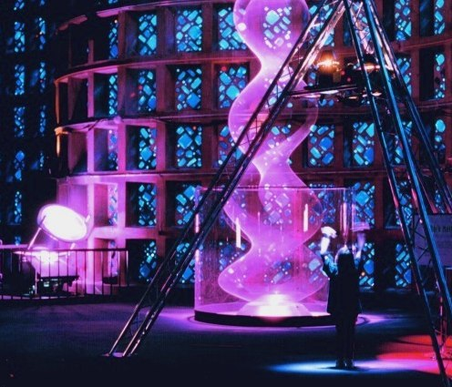

Light and Sound International
May 1998
No Comment . . . Tony Gottelier

We often talk about the artistry of the lighting designer and indeed refer to them, at least amongst ourselves, as artists. When we formed our own design partnership, I remember that, with some conceit we used the soubriquet 'Lighting Architects', though this was subsequently dropped when it seemed to achieve little or no resonance with the customers. (I note, however, that others have subsequently followed suit). It seems that amongst all this naming and shaping, one small but significant group has fallen through the gaps in the jargon and indeed gets very little attention at all, at least in these sainted isles. I refer to those who make art with light, rather than those who use light artistically. That is, I want to focus attention on light made into art, solely for art's sake - to draw attention to Light Artists as a breed.
In the aftermath of the Leeds students' fun attempt at performance art, which incidentally got a much misplaced and misunderstood slagging-off in the media, I am here to tell you that if you attend any fine art degree show these days you will find a couple of students using light as their medium. What happens to these guys when they emerge out into a cruel world is anybody's guess, but we should certainly care.
I am prompted into this diatribe through knowledge of the fact that in the USA (and in France too I shouldn't be surprised), things are somewhat different - light is, and has been, an accepted medium for art work for many years. The latest manifestation of light art in the States took place at the New York Hall of Science during April and May this year. The only reason I know this is that one of the three artists represented, one Paul Friedlander, is a friend of ours, in fact my design partner Peter Wynne Wilson built the special which, in part, enables the piece to perform. The point is, that if it weren't for the fact that he collaborated with the artist, I would probably never have heard anything about it and nor would anyone else here. We should be doing more to promote such work - at present the means of discovery is far too random. So I am taking this opportunity to rectify that situation right now.
In her introduction to LightForms '98, Cynthia Pannucci, founder of Art & Science Collaborations Inc (a non profit-making organisation whose sole purpose is to raise public awareness about art and artists using science and technology to explore new forms of creative expression and we could do with something similar here) describes the show as an international competition of monumental, site-specific interactive lightworks. She points out that without a lot of support, artists working with light will have limited opportunities to push the aesthetic and technical envelope. Ain't that the truth. LightForms is planned as a biennial event.
 Paul Friedlander's Dark Matter (pictured above) is a three storey high, kinetic light sculpture, the form of which is redefined by random re-configuration of motion and light, when triggered by ultrasonic beams. In its quiescent state it is a blue-violet, vertically spinning light wave, apparently suspended in mid-air. In active mode the suspended shape which, though undulating and fluid looks and feels solid, will change to any number of different profiles. All of this done with the following 'simple' ingredients: a spinning rope of variable speed, a top reflecting dish, a collimated, 'chromastrobic' beam of light from a 4kw HMI source (Pete's bit), some control, and the ultrasonic interactive interface - mix together thoroughly and you'll be truly amazed at the result. Friedlander is a prodigious talent and his skills should be given due appreciation.
Other participants at LightForm this year were Louis-Phillipe Demers and Bill Vorn from Kunst Macchina in Montreal who presented an 'immersion' form of interaction using robotic lights, and Dirk Rutten and Jereon Kascha, two Dutch designers who work with fibre optics.
Paul Friedlander's Dark Matter (pictured above) is a three storey high, kinetic light sculpture, the form of which is redefined by random re-configuration of motion and light, when triggered by ultrasonic beams. In its quiescent state it is a blue-violet, vertically spinning light wave, apparently suspended in mid-air. In active mode the suspended shape which, though undulating and fluid looks and feels solid, will change to any number of different profiles. All of this done with the following 'simple' ingredients: a spinning rope of variable speed, a top reflecting dish, a collimated, 'chromastrobic' beam of light from a 4kw HMI source (Pete's bit), some control, and the ultrasonic interactive interface - mix together thoroughly and you'll be truly amazed at the result. Friedlander is a prodigious talent and his skills should be given due appreciation.
Other participants at LightForm this year were Louis-Phillipe Demers and Bill Vorn from Kunst Macchina in Montreal who presented an 'immersion' form of interaction using robotic lights, and Dirk Rutten and Jereon Kascha, two Dutch designers who work with fibre optics.
I notice that this show attracted a considerable number of industry names as sponsors, presumably mostly by way of donated equipment, and those who got involved will have achieved some kudos and possibly some knowledge which they might otherwise have missed out on. This is one way we can push the frontiers, by encouraging those with the courage, enthusiasm and talent to do wacky things with light, and who devote their lives to it, by providing the opportunity to show the products of their imaginations.
Paul Friedlander's ~Dark Matter', part of the Lightforms 98 exhibition in New York.